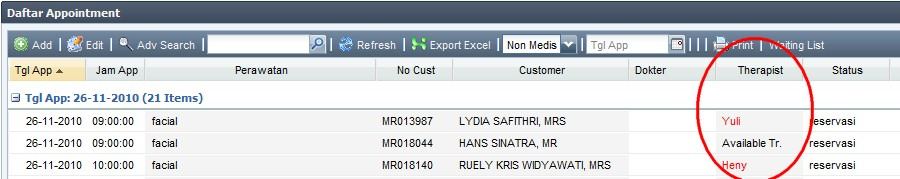
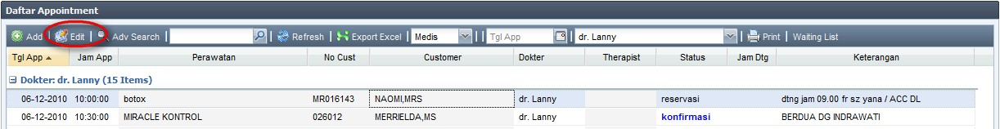
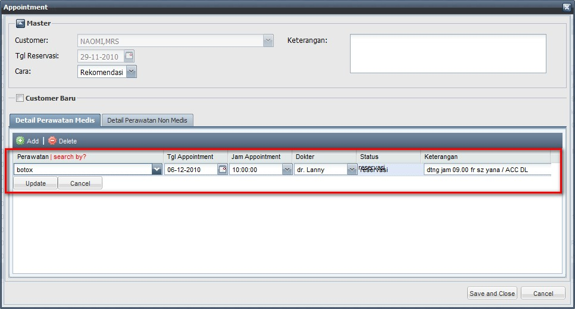
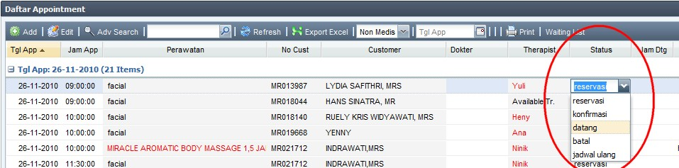

Faktur Penjualan Perawatan Baru
Dalam kondisi normal, kasir tidak perlu membuat faktur penjualan perawatan dari awal, karena tugas kasir hanya melanjutkan proses dari Tindakan (Medis / Non Medis).
- Ketika Customer selesai* melakukan Tindakan, maka secara otomatis perawatan tersebut akan muncul di Daftar Penjualan Perawatan
(*kondisi selesai adalah ketika Suster / Therapist telah mengganti status Tindakan perawatan customer menjadi "selesai")

- Perlu diperhatikan disini, bahwa Status Dokumen faktur awalnya adalah Terbuka, yang berarti faktur tersebut belum pernah dicetak (belum terbayar oleh customer).
- Pilih Faktur milik Customer yang bersangkutan, lalu klik Edit.
- Kasir wajib memeriksa semua informasi pada faktur, terutama Customer dan Detail Penjualan Perawatan serta Informasi Penjualan Paket (jika ada), apakah informasi yang ditampilkan sudah benar.

note:
- Pengambilan Paket yang bisa dicetak di Faktur Penjualan Perawatan adalah khusus Pengambilan Paket hari ini, dan sifatnya hanya informasi saja serta sesungguhnya tidak termasuk di dalam detail faktur yang tercetak.
contoh:
pada tanggal 25 Nov 2010, customer A mengambil perawatan satuan X serta mengambil paket Y. Maka dalam faktur yang dicetak pada hari itu (25 Nov 2010), akan terdapat detail perawatan satuan X serta pengambilan paket Y akan turut tercetak sebagai informasi saja. Sedangkan jika keesokan harinya (26 Nov 2010) kasir mencetak ulang faktur tersebut, maka yang nampak hanya perawatan satuan X saja, sedangkan pengambilan paket Y tidak akan ikut tercetak kembali.
- Kasir dapat menginputkan tambahan Detail Penjualan Perawatan, hanya jika dibutuhkan, dengan cara klik tombol Add

nb : - Kasir juga dapat menginputkan Referal(Kasir), dimana hal ini dibutuhkan jika memang Referal(Tindakan) belum terisi
- Referal(Tindakan) adalah Referal yang diinputkan suster yang berasal dari Tindakan
- Setelah semua informasi diperiksa dan benar, selanjutnya pilih cara pembayaran yang digunakan Customer pada panel Cara Bayar

- pilih Cara Bayar yang dipakai Customer, apakah menggunakan Kartu Kredit, Kuitansi, Tunai, Cek/Giro, atau Transfer
- masukkan data-data yang dibutuhkan untuk setiap Cara Bayar, serta nominal pada field Jumlah (Rp)
(note: untuk keterangan lebih lanjut mengenai Cara Bayar, dapat dilihat pada User Manual MIS ini, di halaman Kasir --> Cara Bayar, atau klik disini)
- Pada panel kanan bawah, isikan data-data tambahan jika diperlukan:

- Tot Item otomatis terisi sesuai dengan jumlah produk yang dibeli
- Sub Total (Rp) otomatis terisi dari jumlah total dari harga produk yang dibeli, setelah diskon satuan
- isikan Diskon (%), yang akan dihitung dari Sub Total (Rp)
- isikan Voucher (Rp) dan No Voucher adalah jika customer mendapatkan diskon tambahan sejumlah Rp tertentu, yang biasanya berupa Voucher
(note: Diskon (%) dan Voucher (Rp) hanya bisa diinputkan salah satu saja, dan tidak bisa keduanya sekaligus)
- Total (Rp) otomatis terisi dari berdasarkan perhitungan Sub Total (Rp) dikurangi Diskon (%) atau Voucher (Rp)
- Total Bayar (Rp) otomatis terisi dari total Cara Bayar 1 + Cara Bayar 2 + Cara Bayar 3
- Hutang (Rp) otomatis terisi jika Total Bayar (Rp) kurang dari Total (Rp)
- klik Save untuk menyimpan Faktur, atau klik Save and Print untuk menyimpan sekaligus mencetak Faktur
Faktur Penjualan Perawatan telah selesai dibuat
(note: Faktur yang tampil di Daftar Penjualan Perawatan adalah hanya faktur - faktur hari ini dan yang statusnya masih Terbuka, atau masih belum dicetak. Untuk melihat faktur yang lain, dapat menggunakan fitur Adv Search)
Copyright © 2010, IT Department of Miracle Aesthetic Clinic Group
Created with the Freeware Edition of HelpNDoc: Easily create HTML Help documents